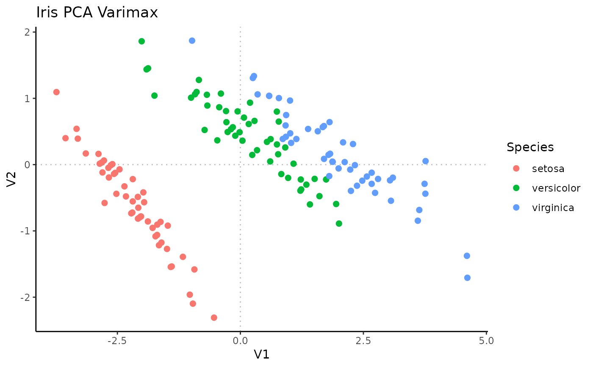
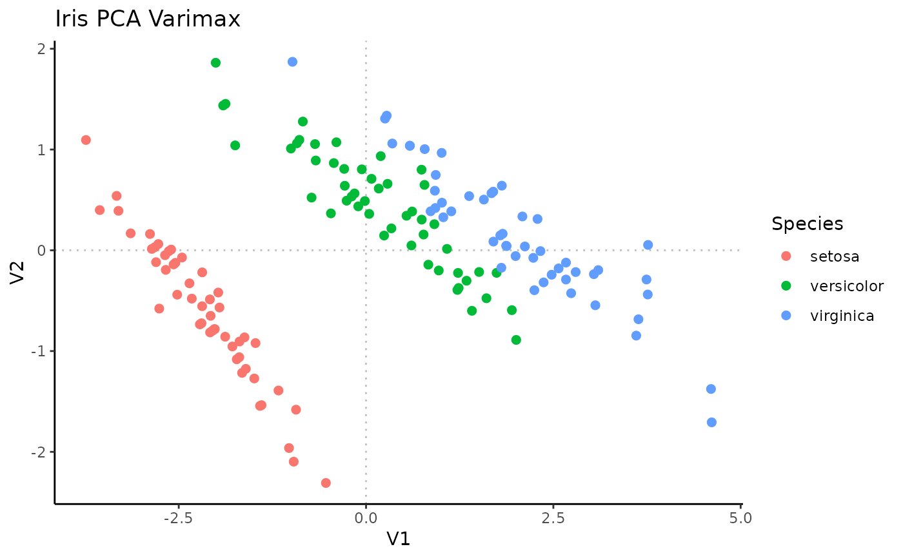

Arguments
- obj_prcomp
prcompobject- ncomp
integer; number of components to perform rotation with
- normalize
logical; T for Kaiser normalization: rows scaled to unit length before rotation, then scaled back afterwards
- savename
string; filepath (no ext.) to save results under
Value
varimax object with varimax rotation mtx rotation, varimax rotated loadings, standardized scores std_scores, and scores scores
Examples
data(iris)
iris$Sample = rownames(iris)
PCA_iris <- Rubrary::run_PCA(t(iris[,c(1:4)]))
#> ** Cumulative var. exp. >= 80% at PC 1 (92.5%)
 PCA_iris_varimax <- Rubrary::rotate_varimax(PCA_iris)
head(PCA_iris_varimax$scores)
#> Scores V1 V2
#> 1 1 -2.049927 -0.79834207
#> 2 2 -2.682972 -0.04875324
#> 3 3 -2.802785 -0.11781979
#> 4 4 -2.883760 0.16196544
#> 5 5 -2.081479 -0.81471667
#> 6 6 -1.168493 -1.39132459
head(PCA_iris_varimax$loadings)
#> Loadings V1 V2
#> 1 Sepal.Length 0.80645291 -0.08037849
#> 2 Sepal.Width -0.05531986 -0.39562981
#> 3 Petal.Length 1.65078788 0.62067282
#> 4 Petal.Width 0.68996837 0.26097986
Rubrary::plot_PCA(
df_pca = PCA_iris_varimax$scores,
PCx = "V1", PCy = "V2",
type = "Scores",
anno = iris[,c("Sample", "Species")],
annoname = "Sample", annotype = "Species",
title = "Iris PCA Varimax"
)

PCA_iris_varimax <- Rubrary::rotate_varimax(PCA_iris)
head(PCA_iris_varimax$scores)
#> Scores V1 V2
#> 1 1 -2.049927 -0.79834207
#> 2 2 -2.682972 -0.04875324
#> 3 3 -2.802785 -0.11781979
#> 4 4 -2.883760 0.16196544
#> 5 5 -2.081479 -0.81471667
#> 6 6 -1.168493 -1.39132459
head(PCA_iris_varimax$loadings)
#> Loadings V1 V2
#> 1 Sepal.Length 0.80645291 -0.08037849
#> 2 Sepal.Width -0.05531986 -0.39562981
#> 3 Petal.Length 1.65078788 0.62067282
#> 4 Petal.Width 0.68996837 0.26097986
Rubrary::plot_PCA(
df_pca = PCA_iris_varimax$scores,
PCx = "V1", PCy = "V2",
type = "Scores",
anno = iris[,c("Sample", "Species")],
annoname = "Sample", annotype = "Species",
title = "Iris PCA Varimax"
)
